Tutorial 2 - Python IDEs, VS Code


This tutorial first presents several common environments and editors for Python code development, and afterward describes VS Code in more detail.
2.1 Python IDEs
An IDE (or Integrated Development Environment) is a program that integrates tools to facilitate software development, such as a code editor, tools for program execution and debugging, and source control.
In other words, an IDE is a graphical user interface for program development, that allows end-users to edit, run, browse, and debug programs from a single interface. Using an IDE is especially convenient for beginners to start editing and running codes.
Most IDEs support several different programming languages. There are some that are designed specifically for Python development (like the IDLE described below).
Also, most IDEs offer a code editor, although the code editor can be an independent software application. A code editor can be a simple text editor, or it can also allow code execution and debugging. In comparison to IDEs, code editors are simpler, but they are also less resource-demanding.
In general, IDEs offer the following basic features: - Save and reload code files - Run code from within the environment - Debugging support - Syntax highlighting - Automatic code formatting
The debugging support typically allows setting breakpoints in the code that stop the execution, showing variable values, and so on. For simpler debugging operations, most IDEs allow clicking on the text of an error message to quickly jump to the line of code where the error occurred, and after correcting the error, to quickly run the code.
Syntax highlighting refers to displaying source code using different colors and fonts according to the category of the written text and commands. It facilitates code writing by providing visually distinct syntax, and it can help to identify mistakes in the code.
Automatic code formatting can include features such as automated indentation, automated spacing around operators, auto-completion, etc.
Other helpful features often include: advanced text and file search options, help links or pop-up windows when hovering with the mouse over an object, selection list for object attributes (e.g., after a . press the Tab key), links to definition of objects, and similar.
Also note that Jupyter Notebook and Jupyter Lab, which we covered in Tutorial 1, are not traditional Python IDEs, as they were primarily designed for working with Jupyter notebooks to allow writing and running code in interactive cells. They still allow working with Python files, and can be considered code editors.
2.1.1 IDLE
IDLE is the original and oldest IDE for Python development. It is available for Windows, Unix, and Mac OS platforms, and it comes preinstalled with the Python installation. IDLE is free, easy to use, and portable across platforms.
The name is a variation of IDE, and it is named after one of the members of the Monty Python group - Eric Idle.
To access IDLE, type in the Anaconda Prompt/Windows Command Prompt (depending of your Python installation): python -m idlelib.idle. The IDLE window is shown in the figure below. Notice the >>> prompt in IDLE, which allows interactive programming, i.e., we can type commands and run them immediately. Also note the syntax highlighting of the entered Python statements, and the menu bar on the top of the window that is similar to the Jupyter Notebook menu and to other MS Office apps (e.g., MS Word).
IDLE is simple and easy to use, but on the other hand, it is somewhat limited compared to more recent IDEs.
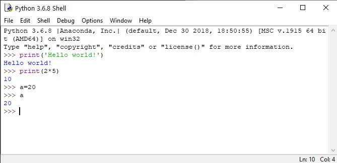
2.1.2 Spyder
Spyder is a Python IDE (https://github.com/spyder-ide/spyder) which is available with the Anaconda installation, so if you installed Anaconda you should have it installed on your computer. It can be accessed from the Start Program menu, as shown below. Spyder offers most of the common IDE features. An interesting feature that is not offered by many similar IDEs is the variable explorer, which displays the user data and variables in a table-based layout inside the IDE.
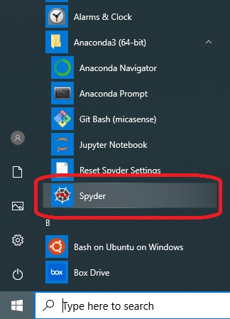
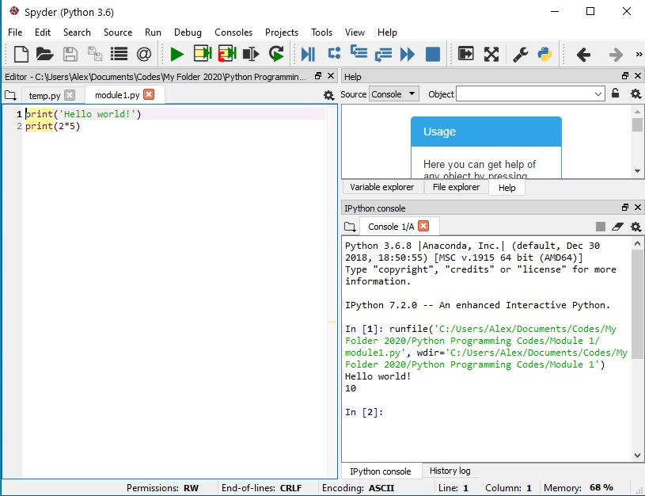
2.1.3 Visual Studio
Visual Studio is a general-purpose IDE (https://visualstudio.microsoft.com/vs/) developed by Microsoft. It is available for Windows and Mac OS, both as free (Community) and paid (Professional and Enterprise) versions. Visual Studio provides support for program development in different programming languages. Python Tools for Visual Studio (PTVS) enables Python coding in Visual Studio. VS is a large download, but it provides excellent tools for different languages.
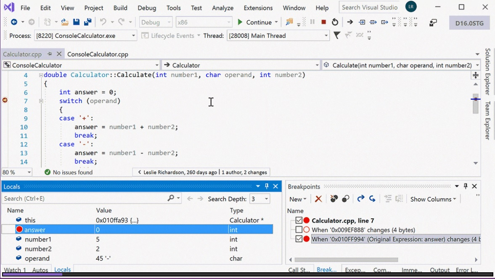
2.1.4 Eclipse and PyDev
Eclipse and PyDev is an IDE (www.eclipse.org), originally developed as a Java IDE, but it supports Python development by installing the PyDev plug-in. It is a popular and powerful IDE for Python development. It is available for Windows, Linux, and Mac OS. However, it may not be the easiest IDE for beginner programmers.
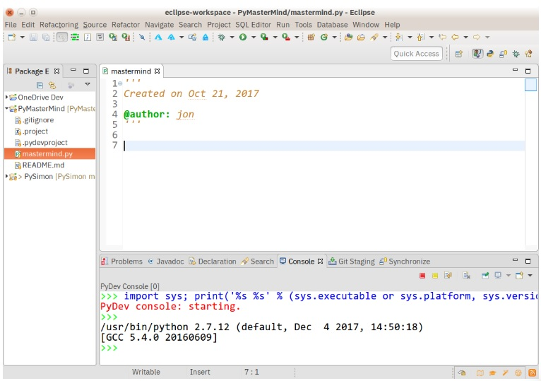
2.1.5 PyCharm
PyCharm is a fully dedicated IDE for Python (https://www.jetbrains.com/pycharm/). Available in both paid (Professional) and free open-source (Community) editions, PyCharm installs quickly and easily on Windows, Mac OS, and Linux platforms. Beside VS Code, PyCharm (especially the Professional version) is one of the most popular IDEs for Python among professional developers.
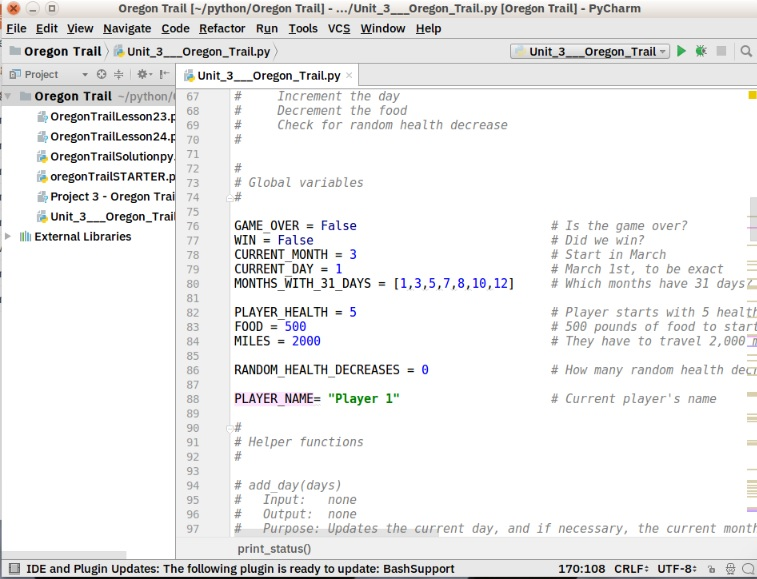
2.1.6 Other IDEs
Beside these, there are also other general-purpose IDEs and code editors, such as Komodo, Sublime Text, Atom, GNU Emacs, and other IDEs dedicated to Python code development, such as PythonWin, NetBeans,Thonny, and many others.
2.2 Introduction to VS Code
Visual Studio Code (VS Code) is a code editor (https://code.visualstudio.com/), available for Windows, Linux, and Mac OS. Differently from the Visual Studio IDE listed above that is a full IDE that is large and resource intensive, Visual Studio Code is a code editor that is small and lightweight, open-source, and extensible. However, although VS Code is a code editor, with extensions (such as Python, Jupyter, Git, Debugger, etc.), it provides most of the features of a full IDE.
VS Code is free and versatile, and allows programming in JavaScript, C++, Java, R, Go, and other programming languages using the same editor. It runs on different OS platforms, and it supports full Git integration. Microsoft releases frequent updates, bug fixes, and new features for VS Code. Because of these features, VS Code is currently among the most popular editors for Python code development.
2.2.1 VS Code Download and Installation
VS Code can be downloaded from: https://code.visualstudio.com/
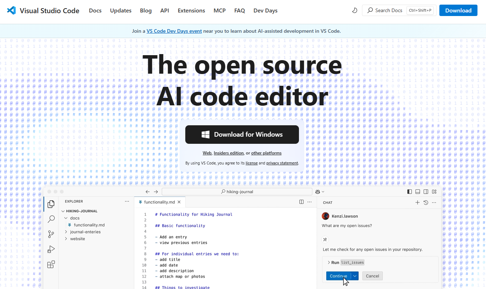
During the installation, choose all the default options.
After the installation is completed, open the VS Code, and all initial settings can be selected as defaults.
When you first open VS Code, the window will look similar to the following figure.
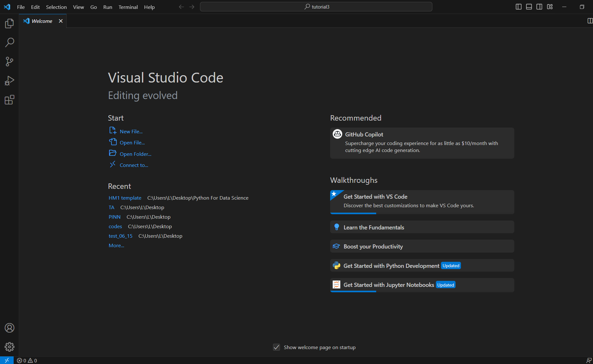
2.2.2 VS Code User Interface
The layout of VS Code is shown in the figure below. It follows a common interface design, with a file explorer on the left for browsing available folders and files, and an editor on the right for viewing and editing the selected files.
The user interface is organized into five main areas:
- Editor area: The central workspace where you edit files. Multiple editors can be opened side by side, both vertically and horizontally.
- Side bar: Provides various views such as file explorer, search, and other views to help manage your project.
- Activity bar: Positioned on the left-hand side, it offers quick access to tools including Explorer, Search, Source Control (Git), Run and Debug, and Extensions. The selected tool is displayed in the Side Bar.
- Panels: Docked below the editor, panels can display an integrated terminal, debug console, output logs, or problems (errors and warnings).
- Status bar: Located at the bottom of the window, it displays information about the opened project, opened files, and active environment or branch.
VS Code remembers your workspace, and when reopened, it restores the previously opened folder, files, and layout for an convenient continuation of your work.
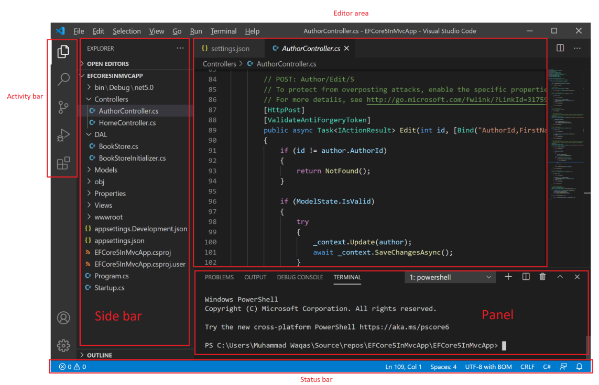
Activity Bar
The Activity Bar on the left lets you quickly switch between views in the Side Bar.
This activity bar contains the following tabs: - Explorer: Displays current project’s files and folders. You can open, create, delete, and browse files directly from here. - Search: Allows to search for a keyword across all files in your workspace. - Source Control (Git): Supports Git integration, and enables to commit, push, pull, view diffs, and manage branches without leaving VS Code. - Run and Debug: Used to launch and debug applications. Lets you set breakpoints, step through code, inspect variables, etc. - Extensions: Opens the Extensions Marketplace, where you can install extensions such as Python, Jupyter, Docker, themes, and other libraries.
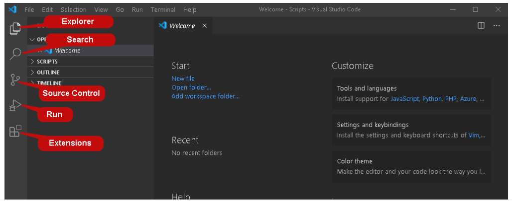
Command Palette
The Command Palette is a quick-access tool in VS Code that lets you run commands without navigating through the menus in the top Menu Bar. You can open the Command Palette with Ctrl+Shift+P. It can also be accessed from the View tab.
Once the Command Palette is open (shown in the figure below), you can start typing to search for any command, such as changing user settings, selecting a Python interpreter, running a build task, or installing an extension, which can all be done using the same interactive window.
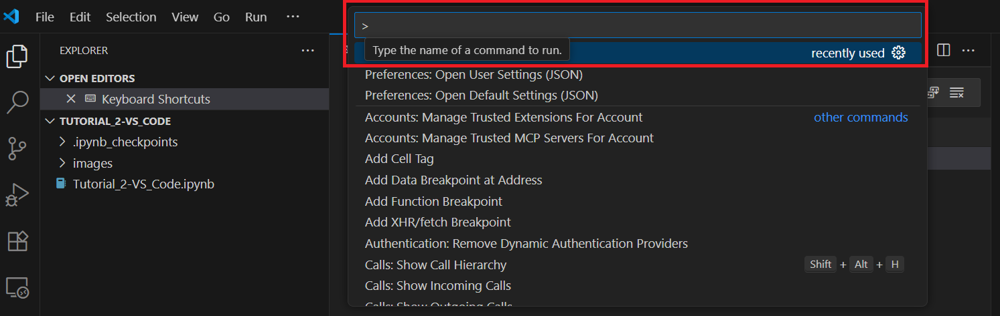
Color Themes
VS Code provides different color themes to suit your preference and work environment. To select a color theme, open the Command Palette (Ctrl+Shift+P) and type Color Theme. Select Preferences: Color Theme and from the list of themes, select the one that you prefer.
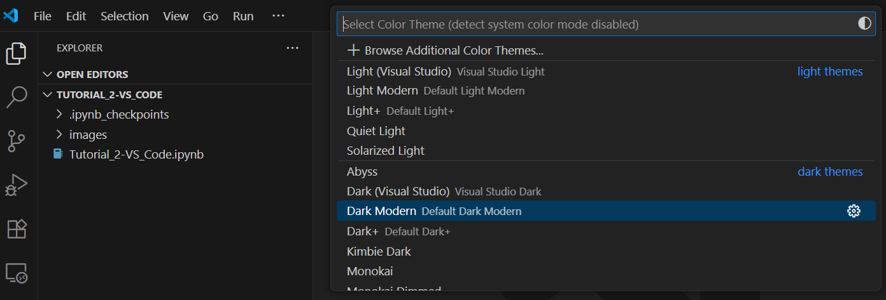
2.2.3 Extensions Installation and VS Code Configuration
To run Python in VS Code, we need to install the Python extension first.
In the Activity Bar of the VS Code Window, select the Extensions tab, search for the Python extension, and install it.
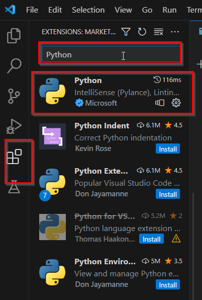
Similarly, to work with Jupyter notebooks, we need to install the Jupyter extension. Search for the extension and install it.
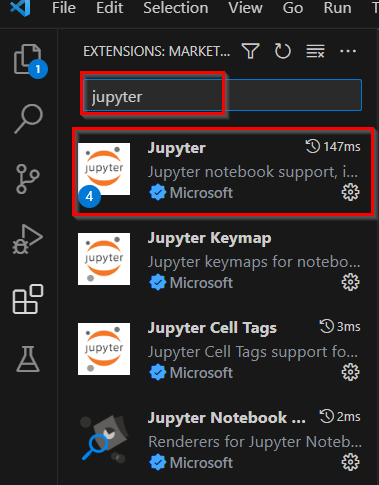
2.2.4 Working with Jupyter Notebooks in VS Code
To open a folder in VS Code, we can just click on the File tab in the Menu Bar, and select Open Folder.
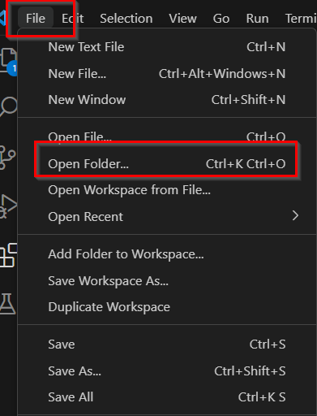
Workspace Trust
When opening a folder for the first time, we want to make sure that it is a trusted workspace. The Workspace Trust feature in VS Code allows to indicate which folders and their contents should be trusted to be executed.
If this is a folder that you have created or it is from a trusted source, then select “Yes, I trust the authors.” If you selected untrusted mode, the files will be open in Restricted Mode, which allows to browse the files but it does not allow to execute code.
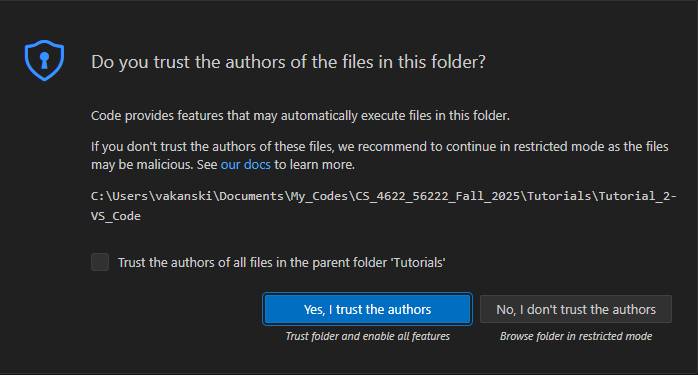
Create a Jupyter Notebook File
There are two ways to create a new Jupyter Notebook file inside a folder.
Click
Filein the top Menu Bar and then selectNew File, afterward choose theJupyter Notebookoption.Right-click in the blank area under your folder’s name on the left side of the window, select
New File, and type the file name with the.ipynbextension.
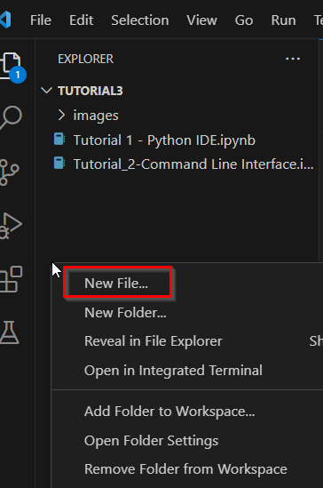
Setting Up the Python Kernel
To work with Python in Jupyter notebook files, the first time we run a Jupyter notebook file, we need to manually select the Python kernel. If you have installed Anaconda on your computer, you can select the Python kernel from Anaconda for running Jupyter Notebooks. Alternatively, if you didn’t install Anaconda, you will need to select the Python environment in which you have installed the Jupyter package.
In the upper right corner of the screen, click Select Kernel to select the Python interpreter. Also, you can open the Command Palette, and type Python: Select Interpreter. The Python installation and environment from Anaconda should be listed (shown as “Python 3.9.13 (base)” in the figure below) and we can select it for working with Jupyter notebooks.
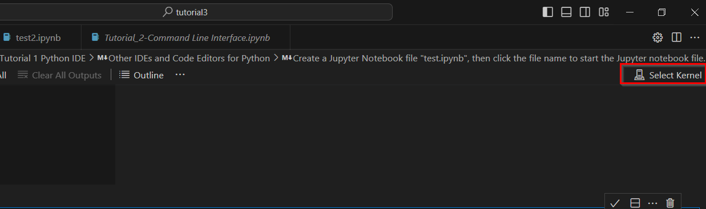
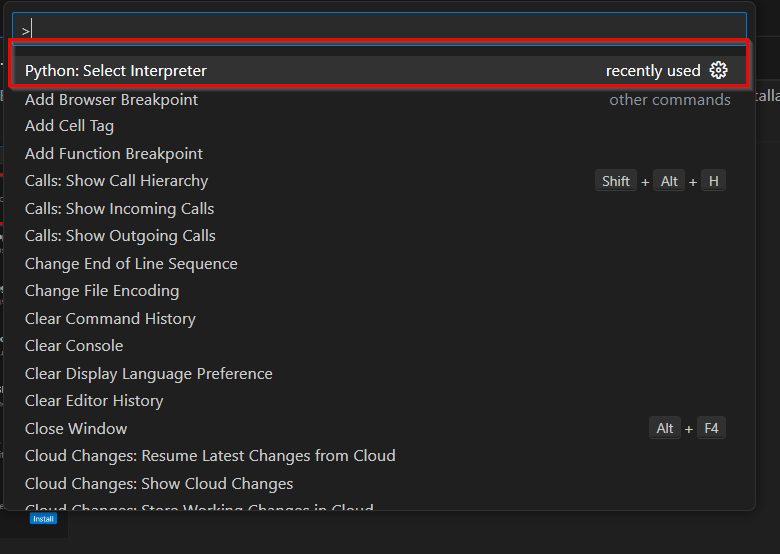
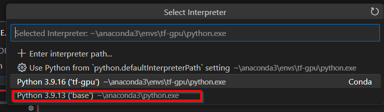
2.2.5 Running Cells
To run a single cell in Jupyter notebooks, use the Run Cell icon to the left of the cell (shown below).
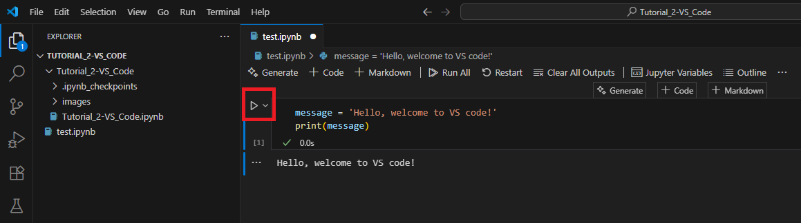
To run multiple cells, we can use the double arrow in the top toolbar Run All to run all cells in the Jupyter notebook.
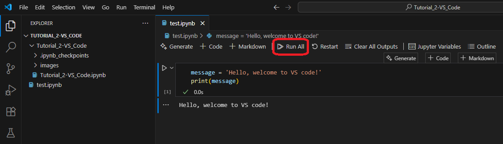
Also, multiple cells can be run by selecting the floating menu on the right side in the current cell shown below, which contains the following icons, from left to right:
Run by Line, which runs the code in a cell line by line.Execute Above Cells, which runs all the cells above the current cell.Execute Cell and Below Cells, which runs the current and all the below cells.
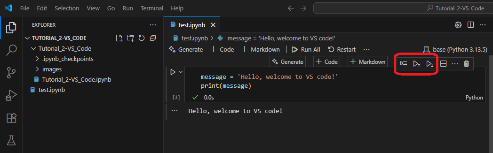
Add and Move Cells
To add a new cell below the currently selected cell, use the plus icon in the top toolbar and select whether to add a Code cell or Markdown cell.
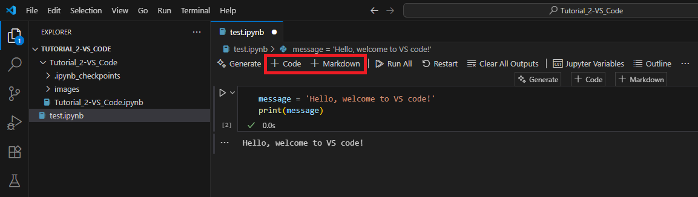
To render Markdown cells, select the check mark in the cell toolbar, as shown below.
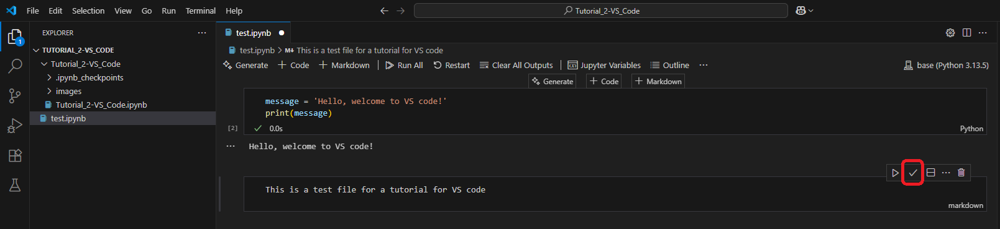
To move cells, click and hold the blue bar in front of the cell, then move to any place you prefer.
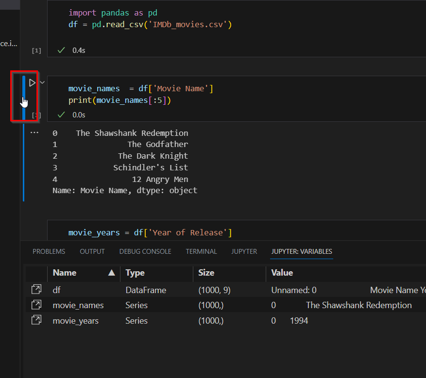
Variable Explorer and Data Viewer
The tab Variables enables to view, inspect, sort, and filter the variables and data within your current Jupyter notebook. It provides a visual interface for investigating the present state of variables and their values.
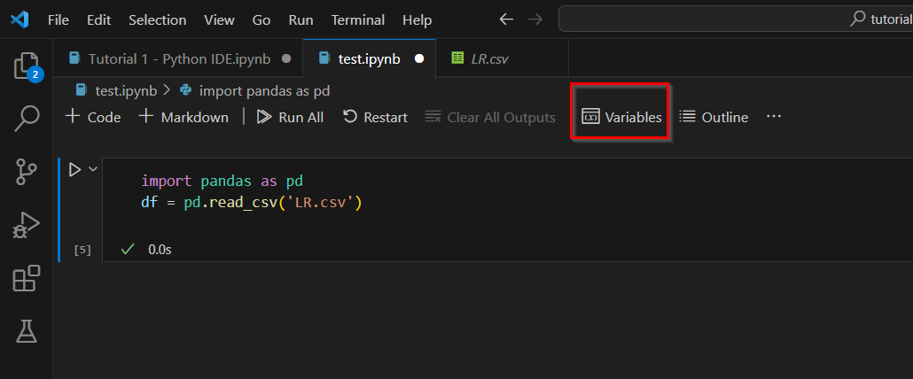
Debug Features
To debug code in Jupyter notebooks, click the arrow next to the Run Cell button and select Debug Cell. This will allow to debug the code like you normally do in Python, allowing to run code by line, set breakpoints, etc.
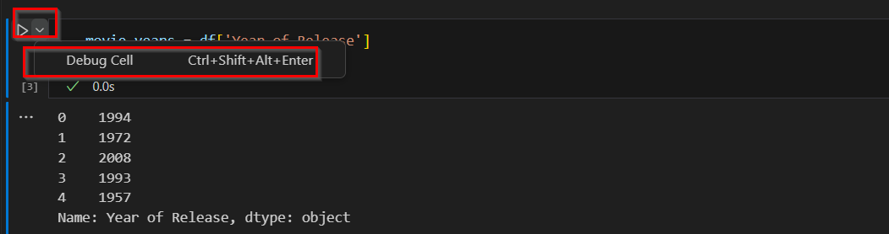
2.2.6 IntelliSense Support in Jupyter Notebooks
IntelliSense is a general term for code editing features related to code completion and intelligent code assistance. The built-in IntelliSense features in VS Code provide a set of tools that enhance the Python development experience in Jupyter notebooks by making coding faster, more accurate, and more intuitive.
The functions provided by the built-in IntelliSense features in VS Code include: - Code completion and auto-suggestions: It predicts and auto-generates code as you type, reducing the need for manual input and the chances of typos and syntax errors. It offers context-aware recommendations for variable names, function names, and module imports. The feature also includes pre-defined code templates for common programming patterns such as for loops and function definitions. - Parameter information and error detection: When you call a function or method, IntelliSense displays information about the function’s parameters, including their names, data types, default values, and descriptions. This makes it simpler to provide the correct arguments when calling functions. Additionally, IntelliSense provides real-time error highlighting for syntax errors, undefined variables, and type mismatches, allowing for immediate correction as you type. - Additional features: IntelliSense also provides hover information for quick access to documentation and type hints, navigation support to access function definitions, and enhanced support for popular Data Science libraries like NumPy, pandas, and matplotlib.
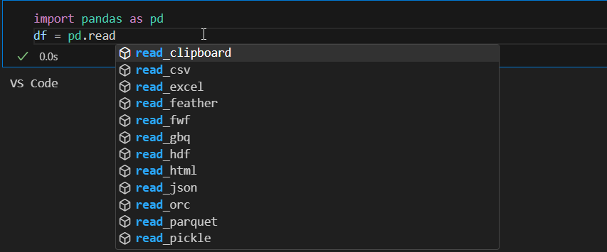
References
- Jupyter Notebooks in VS Code, available at: https://code.visualstudio.com/docs/datascience/jupyter-notebooks.
- RIP Tutorial for Visual Studio Code - User Interface, available at: https://riptutorial.com/visual-studio-code/learn/100006/user-interface.
- SQLShackSkip, Getting started with Visual Studio Code (VS Code), by Rajendra Gupta, available at: https://www.sqlshack.com/getting-started-with-visual-studio-code-vs-code/